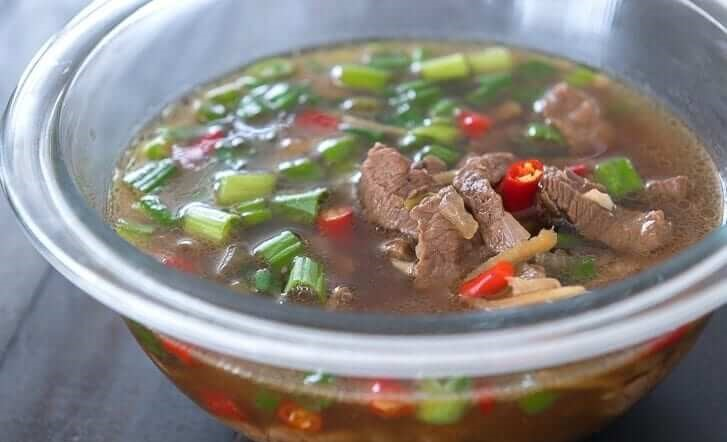

Beef Hinalang Recipe
What is Beef Hinalang?
Beef Hinalang is a spicy Filpino soup dish. There are several versions of this dish. This recipe depicts the version from Mindanao. If you love spicy food, this recipe is a must try.
Ingredients
1 1/2 lbs beef
1 piece Knorr Beef Cube
3/4 cup green onion
12 pieces Thai chili pepper
2 tablespoons white vinegar
4 tablespoons soy sauce
1 piece onion
3 thumbs ginger
5 cloves garlic
4 cups water
3 tablespoons cooking oil
Ground black pepper to taste
Instructions / How to Cook
1. Heat oil in a pot. Saute onion, garlic, and ginger.
2. Once onion softens, add beef. Saute until medium brown.
3. Pour vinegar and soy sauce. Let boil.
4. Add Knorr Beef Cube. Stir and then pour-in water. Let the water boil. Continue to boil in low to medium heat for 30 minutes of until the beef gets tender. Note: add more water if needed.
5. Add Thai chili pepper and green onions. Season with ground black pepper. Cook for 2 minutes. Serve hot. Share and enjoy!